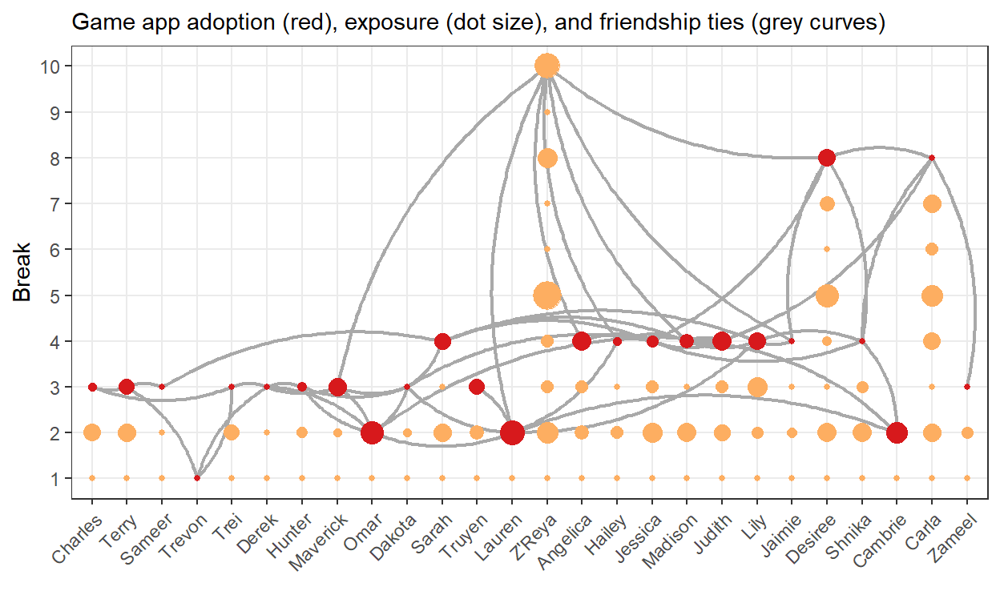

In Sessions 1 and 2 we tried to predict pupils’ voice loudness from the loudness in their network during a break. Do pupils adjust their voice loudness to the loudness of their current conversation partners, their current playmates, or other pupils on the playground?
In the current session, we want to predict network effects on the adoption of a new game app. Let us call this contagion because it resembles adopting a disease (becoming infected) from contacts with infected people.

This figure summarizes our diffusion data:
Exercises
We want to predict the presence versus absence of a feature (having the new game app) instead of a numerical score like pupil loudness. This requires a different type of regression analysis: logistic regression.
Unfortunately, logistic regression is a bit more complicated than ordinary regression. But it pays off to understand the basics because statistical models of network change (Session 6) are based on models similar to logistic regression.
The data relevant to our analyses looks like this (press the little black triangle at the top right to see more variables if not all variables are shown):
Variables:
0 = boy, 1 = girl);1) or did not adopt (0) the game app before this break;Note that we have multiple observations (rows) for pupils. In every break, a pupil was at risk of having adopted the game app. The adoption variable registers whether (1) or not (0) the pupil adopted the game app.
For example, Hunter did not adopt the game app before the first or second break. He adopted it between the second and third break.
Having adopted the game app before the third break, Hunter is no longer at risk of adopting it. From this point on, he is irrelevant to the question that we want to answer, so there are no observations (rows) for Break 5 and later for him.
With the observations (rows) in our data set, we determine who is (at what time) relevant to answering our research question.
Exercises
If we would want to predict when a pupil starts playing with the game app, what would we do with pupils who haven’t installed the app yet?
If we would want to predict how long a pupil is playing with the game app, for which situations would we create rows in our data set?
A logistic regression can be executed with the glm() function, using:
family part of the command below (new!).# Predict adoption (0/1) from exposure, number of friends who adopted, and pupil's sex.
model_diffusion <- glm(
adoption ~ exposure + cum_friends_adopted + sex, #formula
data = diffusion_data, #data
family = binomial(link = "logit") #type of regression model: logistic
)
# Inspect the results.
summary(model_diffusion)
Call:
glm(formula = adoption ~ exposure + cum_friends_adopted + sex,
family = binomial(link = "logit"), data = diffusion_data)
Deviance Residuals:
Min 1Q Median 3Q Max
-1.1715 -0.8220 -0.5868 0.2355 1.9413
Coefficients:
Estimate Std. Error z value Pr(>|z|)
(Intercept) -0.6831894 0.3754206 -1.820 0.0688 .
exposure 0.0199328 0.0149120 1.337 0.1813
cum_friends_adopted 0.0004805 0.1626086 0.003 0.9976
sex -1.0364557 0.5135671 -2.018 0.0436 *
---
Signif. codes: 0 '***' 0.001 '**' 0.01 '*' 0.05 '.' 0.1 ' ' 1
(Dispersion parameter for binomial family taken to be 1)
Null deviance: 111.89 on 98 degrees of freedom
Residual deviance: 106.75 on 95 degrees of freedom
AIC: 114.75
Number of Fisher Scoring iterations: 4The coefficients tell us that exposure (0.020) and number of friends who adopted previously(0.0005), have a positive effect on adoption. Pupils with more exposure to gaming playmates and/or more friends who have adopted tend to adopt more (quickly).
The effect of sex on adoption is negative (-1.036), so girls (coded 1) on average adopt less (quickly) than boys (coded 0).
But what do these numbers actually mean?
In logistic regression, we do not predict that a pupil adopts (1 for yes) or not (0).
Instead, we predict something quite technical, namely, the log odds (also called: logit) of game adoption over no game adoption.
For the lovers of mathematical notation, this is what we predict:
\[log\left(\frac{Pr\left(y = 1\right)}{Pr\left(y=0\right)}\right)\]
The odds of adopting the new game app is the probability (\(Pr()\)) of adoption (the dependent variable \(y\) equals 1) divided by the probability of not adopting (the dependent variable \(y\) equals 0).
The (natural) logarithm (\(log()\)) of the odds is estimated. So the estimated effect of sex (-1.036) means that the log odds of adoption are on average 1.036 lower for girls than for boys.
What does this mean? Is it much or little?
Being ordinary people, we cannot make sense of such an interpretation. We prefer to compare the adoption probability for girls and boys.
We can use the predict() function to get predicted probabilities.
# Estimate the logistic regression model.
model_diffusion <- glm(
adoption ~ exposure + cum_friends_adopted + sex,
data = diffusion_data,
family = binomial(link = "logit")
)
# Get predicted adoption probabilities for boys and girls.
predict(
model_diffusion, #the stored logistic regression results
data.frame( #enter the variables and values for which you want predictions:
sex = c(0, 1), #zero for boys, one for girls
exposure = c(0, 0), #both the boy and girl having 0 exposure...
cum_friends_adopted = c(0, 0) #... and 0 friends who already adopted
),
type = "response" #gives probabilities not log odds
) 1 2
0.3355498 0.1519169 For boys and girls without exposure and friends who adopted previously, the probability to adopt the game app are 0.34 and 0.15, respectively. Boys are more than twice as likely to adopt the game app than girls. That sounds like a substantial difference.
Exercises
Modify the code to predict adoption probabilities for boys and girls who score 50 on exposure (a high exposure score that appears among both boys and girls) but who do not have friends who adopted the game app previously. What happens to the probabilities?
Modify the code to predict adoption probabilities for boys and girls who have 5 friends who adopted the game app previously but who score 0 on exposure. What happens to the probabilities? What does it tell you about the effect of having adopters among your friends on your adoption probability?
Modify the code to predict adoption probabilities for a boy who has no (zero) exposure and a boy who scores 50 on exposure. Both boys do not have friends who adopted the game app previously. What does the result tell you about the effect of exposure to gaming playmates on adoption probability (for boys)?
After having completed Session 2, you may think that we need a multilevel model because we have repeated measurements for pupils: one measurement (row) for each break in which they are at risk of adopting the game app.
Good thinking!
However, this is an exception. Let us have another look at Hunter’s data.
We have three rows for Hunter. The dependent/outcome variable is twice 0 and one time 1. If we calculate the average of these three numbers, we get 0.333 (one third). This is the probability that Hunter adopts.
With a logistic regression model, we predict probabilities. So the three rows for Hunter give us the probability that we need. No need to correct for dependencies within the dependent/outcome variable.
(This is a simplified explanation but it touches the main point.)
Exercises
The data set diffusion_data contains a few more variables that you can use to predict the probability to adopt the game app:
predict() command.# Predict adoption (0/1) from exposure, number of friends who adopted, and pupil's sex.
model_diffusion <- glm(
adoption ~ exposure + cum_friends_adopted + sex, #formula
data = diffusion_data, #data
family = binomial(link = "logit") #type of regression model: logistic
)
# Inspect the results.
summary(model_diffusion)
# Get predicted adoption probabilities for boys and girls.
predict(
model_diffusion, #the stored logistic regression results
data.frame( #enter the variables and values for which you want predictions:
sex = c(0, 1), #zero for boys, one for girls
exposure = c(0, 0), #both the boy and girl having 0 exposure...
cum_friends_adopted = c(5, 5) #... and 0 friends who already adopted
),
type = "response" #gives probabilities not log odds
)confint() function to get the confidence intervals of the effects in the models that you estimate under Exercise 1. When are we sure about the direction (positive/negative) of the effect and when are we not?We learned the basics of predicting presence versus absence of a characteristic among the pupils in our study.
This characteristic was adopting (versus not adopting) a new game app. It could also have been the adoption of a cultural behavior, acquiring a disease, or making a positive versus a negative statement (to be discussed in Session 5).
Perhaps surprisingly, it can also be the presence versus absence of a network tie, like friendship, being playmates, choosing a conversation partner, and so on. In other words, we can predict network structure with this kind of model (Session 6).
Logistic regression is like ordinary regression except that:
Centola, D. (2018). How Behavior Spreads: The Science of Complex Contagions. Princeton University Press. Presents an influential perspective on (analyzing) contagion through networks.
For thorough understanding of logistic regression, study: Hosmer, D. W., Lemeshow, S., & Sturdivant, R. X. (2013). Applied Logistic Regression (3rd ed. or later). Wiley.
As always, it is not easy to calculating the exposure variables (number of friends who have adopted the game app; time with playmates using the game app). In this section, you can see how that can be done.
This is an advanced topic that you should probably only study if you start working with your own data.
#Create the data for analyzing gameapp adoption.
#Create helper table of adoption times: first break in which pupil plays with
# app on their phone.
# Variable gameapp in pupils_dyn: if 1, pupil played with own game app
adopters <- pupils_dyn %>%
#select gameapp use observations
filter(gameapp == 1) %>%
#select earliest (minimum) break with game use as adoption break for each pupil
group_by(ID) %>%
summarise(breakAdopt = min(breakID))
#Create helper table with exposure to gaming peers as time (in minutes) spent
# with a gaming playmate in the preceding break (can be over 30 minutes if pupil
# is exposed to more than one gamer at a time).
exposure <- pairs_dyn %>%
#select the playmate ties in all breaks
filter(dyntie == "Playmate") %>%
#add information about pupil's activities (including playing the game) from
# pupils_dyn
# first, ignore the actual playing times and add all activities from pupils_dyn
# within a break
left_join(
pupils_dyn,
by = c("to" = "ID", "breakID" = "breakID")
) %>%
# second, only keep the activities that overlap in time with playing together
# Note: the onset and terminus of playing together are now 'onset.x' and
# 'terminus.x', whereas the onset and terminus of the pupil's activities are
# now 'onset.y' and 'terminus.y'
filter(
onset.x < terminus.y & #playing must start before end of pupil's activity
terminus.x > onset.y #and playing must end after start of pupil's activity
) %>%
# now we have all instances in which playing together and playmate's gaming
# overlap
#calculate the time overlap
mutate(duration =
#smallest end time minus
ifelse(terminus.x < terminus.y, terminus.x, terminus.y) -
#largest starting time
ifelse(onset.x > onset.y, onset.x, onset.y)) %>%
#sum exposure time for each pupil per break
group_by(from, breakID) %>%
summarise(exposure = sum(duration, na.rm = T), .groups="drop") %>%
#add 1 to breakID: exposure in break 1 must predict adoption in break 2
mutate(breakID = breakID + 1)
#Create helper table with number of friends who previously adopted the gaming
# app for each break.
friends_adopted <- pairs_const %>%
#select all friendships
filter(friend == 1) %>%
#add the friend's ('to') adoption time (as break number)
left_join(adopters, by = c("to" = "ID")) %>%
#get rid of friends who never adopted
filter(!is.na(breakAdopt)) %>%
#calculate (per pupil and break) the number of friends who have adopted per
# pupil per break
group_by(from, breakAdopt) %>%
summarise(friends_adopted = n(), .groups = "drop") %>%
#add 1 to breakAdopt: friend's adoption in break 1 must predict adoption in
#break 2
mutate(breakAdopt = breakAdopt + 1)
#Create the data to predict game app adoption from exposure and other variables
diffusion_data <- pupils_const %>%
#create a case for every pupil-break combination
full_join(
data_frame(breakID = 1:10), #new data frame: 1 variable, 10 observations, values 1 to 10
by = character()
) %>%
#add adoption times
left_join(adopters, by = "ID") %>%
#remove observations for breaks after the adoption break (pupil no longer at risk to adopt)
filter(breakID <= breakAdopt | is.na(breakAdopt)) %>%
#create dependent variable: 0 for not yet adopted, 1 for adopted
mutate(adoption = case_when(
breakID == breakAdopt ~ 1,
TRUE ~ 0)
) %>%
#add exposure score (in preceding break) to pupils (if any)
left_join(exposure, by = c("ID" = "from", "breakID" = "breakID")) %>%
#set missing exposure values to zero: no exposure
mutate(exposure = ifelse(is.na(exposure), 0, exposure)) %>%
#add number of friends who adopted previously
left_join(friends_adopted, by = c("ID" = "from", "breakID" = "breakAdopt")) %>%
#replace missing number of friends who adopted by zero
mutate(friends_adopted = ifelse(is.na(friends_adopted), 0, friends_adopted)) %>%
# Step 2: in the data (sorted on pupil and break) replace values by the
# highest preceding or current value
arrange(ID, breakID) %>%
group_by(ID) %>%
mutate(cum_friends_adopted = cumsum(friends_adopted)) %>%
ungroup() %>%
# get rid of superfluous variables
select(-present, -onset, -terminus)